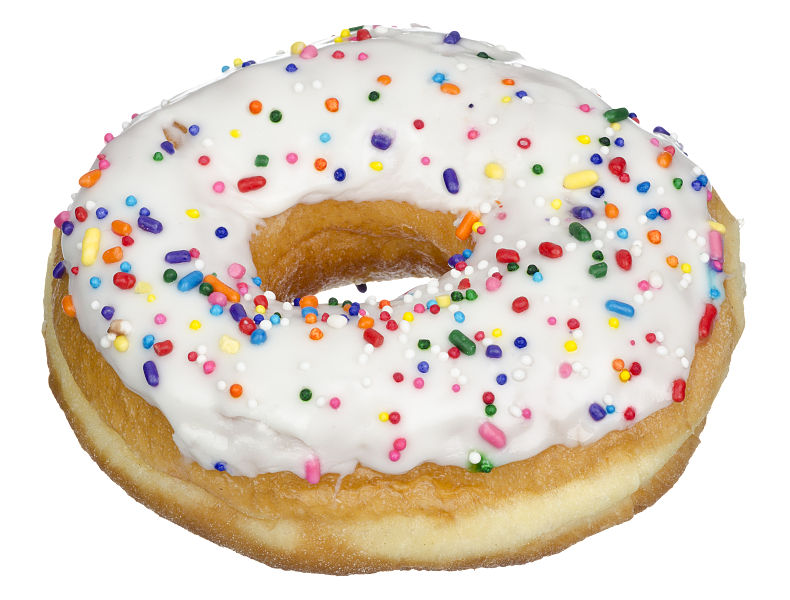

Do you like donuts?
Do you like the creamy taste and the sugary topping? Do you dream of donuts when you sleep?
If you do, you don't know the secret that donuts try to hide from you.
Donuts have proven time and time again that they are not what they seem.
They watch at us night. They steal our things when we sleep. They give us nightmares. They are NOT our friends like they make it seem. They LIE!!
Donuts work for a secret organization that the average eye does not see. They are the evil in our lives that we must remove!!
In order to see this evil, we must look closer at the situation.
Here is a glimpse of the truth:
Donut = Doughnut
The word Doughnut has 8 letters
The word sprinkle also has 8 letters
Sprinkles are put on Ice cream
Ice cream = Ice cream cake
Frosting is put on cake
Frosting = Rainbow frosting
Rainbow frosting has the Letter "R"
Bay Ridge also has the letter "R"
Do you know what else has the letter R?
That is right, The word rock has the letter R
Rocks are round
Do you know what else is round?
Donuts are round
Donuts also have a round hole in the center
In the picture below, an eye looks through the hole
Eyeballs are round
Eyes can look a'round'
When eyes look around, they can see shapes
A circle is a shape
Circles are also round
The word 'round' starts with the letter R